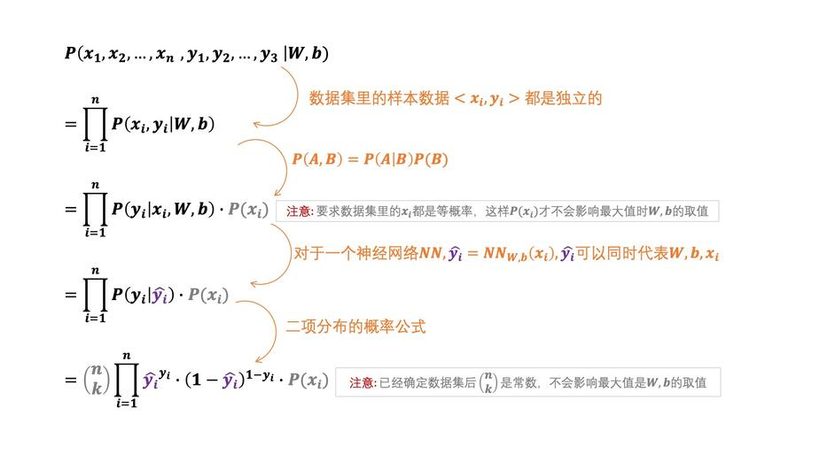

“损失函数”是如何设计出来的？直观理解“最小二乘法”和“极大似然估计法”
本文最后更新于：20 天前
在吴恩达的课程中提到了两个公式分别是最小二乘法和极大似然估计 \[ \mathscr{L}\left(\hat{y}, y\right) = \frac{1}{2}\left(\hat{y}-y\right)^2 \]
\[ \mathscr{L}\left(\hat{y}, y\right) = -\left(y\log\hat{y} + \left(1-y\right)\log\left(1-\hat{y}\right)\right) \]
本章要解决的问题：
- 直观的理解损失函数是什么， 为什么这么重要
- 吴恩达老师给出的两个损失函数分布是最小二乘法和极大似然估计，他们是怎么来的， 为什么叫这个名字
- 最小二乘法和极大似然估计有什么联系
损失函数的作用
在弄明白损失函数是如何设计出来之前，我们得先清楚损失函数的作用是什么
首先如果我们要判断一张照片是不是猫，对于人来说是很简单的我们只需要看一眼便有了答案。如果让我们去制定一个标准来认定符合什么的是猫符合什么的不是猫其实并没有那么容易，但在我们心里我们知道是有那么一个定义或者规律的。
所以对于机器来说我们并不需要直接告诉他们去判断一个物品是什么的准确标准是什么，而是让他们学习找到这个规律。 具体过程就是先判断再比较然后调整，一直循环这个过程。而损失函数就是用来比较这个环节用来比较模型的判断和我们脑中的判断的差距有多大。
通过损失函数我们能知道当前模型和我们脑中的模型的一个差值， 然后我们可以通过比如梯度下降来把损失函数计算出来的差值分配给各个参数。使用梯度下降的好处就是我们可以知道具体哪个参数贡献的差值较多哪个较少。最后通过调整参数然后一遍一遍的判断计算损失值修改我们最后把差值降低到一定的范围之内。
“最小二乘法”是怎么得出来的
想要获得真实规律和神经网络里规律的差值我们就需要设计出损失函数对他们进行比较，但我们无法将真实规律和模型的规律进行直接比较因为我们并不知道真实的规律。
庆幸的是我有已经打好标签的数据集，这些数据我们已经知道正确结果了，换句话来说这些标签其实就是真实规律的判读结果。那既然我们无法直接比较规律我们就可以比较他们判断的结果。如果我们猜测的规律就是真实规律的话， 那么神经网络的判断结果一定和数据标签一致。\(\hat{y}\)是神经网络判断的结果， \(y\)是标签的真实结果，那么损失函数就可以设计成， 把数据集里所有数据都放到神经网络判断一遍，挨个比较猜测的结果和真实的结果，看看它们之间差了多少，然后把所有的差值都加起来。 \[ \sum_{i=1}^{n} \left| \hat{y}_i-y_i \right| \] 我们都知道，绝对值这个函数并不是全定义域都可导的，而随后求最小值还要进行求导，所以我们就可以把绝对值换成平方（还额外加了一个系数\(\frac{1}{2}\)，这是因为求导的时候指数部分的\(2\)会拿下来，可以和\(\frac{1}{2}\)抵消）。 \[ \sum_{i=1}^{n} \frac{1}{2} \left( \hat{y}_i-y_i \right)^2 \] 于是寻找最接近真实规律的过程，就可以描述成是求上面这个式子最小值的过程，而这就是最小二乘法，二乘其实就是以前对平方的一种称呼。
如果深度学习是个概率问题
第一个式子是怎么设计出来的，这个问题我解决了。那第二个式子又是如何设计出来的？它又为什么叫做极大似然估计法，似然又是个啥？
要想明白这些，就需要切换一下视角了，需要从概率的视角来看深度学习问题。
怎么切换成概率呢？我们可以先来看一下最理想的情况，比如，我们可以想象一下，把真实规律用概率分布的方式表示出来，会是什么样子。 （假如说就是判断是一个非猫即狗的二分问题）
也就是说，只要图片是猫，那么判断的结果一定不会是狗；如果图片是狗，那么判断的结果就一定不是猫，没有任何判断错误的情况出现。（注意：“具体一个猫的图片判断结果也是猫”这个事件的概率并不等于1，“所有猫的图片都判断成猫”、“所有狗的图片都判断成狗”，它们这些事件的概率全加起来才是1）
但是我们猜测出来的规律呢？虽然仍然可以用一个概率分布来表示，但是就没有这么准了，就算是给了一张猫的图片，但是神经网络还是有概率把它判断成狗。最理想的情况，当然是让我们猜测出来的规律可以和真实规律的概率分布一模一样，但现实是，我们几乎不可能得到和真实规律一模一样的规律，只能近似。（这个原因，需要对PAC框架和VC维理论有比较深入的理解之后才能解释清楚，这里就不多解释了。可以简单的理解为，任何一种机器学习的模型能力都是有限的，所以无法学到真实规律。）
不过，不论这么样，不论是真实的规律，还是我们猜测的规律，都可以用一个条件概率分布来呈现。我们得到的数据集里面打好标签的数据，其实就是在真实规律这个概率分布下进行抽样得到的结果，而深度学习的过程，就是我们已经有了样本数据，去反推背后概率分布是什么的过程。
这就相当于，你有一个不知道正反概率是什么的硬币，抛了10次结果是7正3反，如何才能反推出这个硬币正反的真实概率。
已知样本数据， 如何反推概率分布
如何才能反推出硬币真实的概率呢？投了10次，7正3反，是不是说硬币的概率就一定是正面的概率是0.7，反面的概率是0.3呢？
这么想很符合我们的直觉，但这并不是一件板上钉钉的事情。
你可以想一下，假如说，我们的硬币是正反概率都是0.5的话，你抛10次，难道就真的能保证一定是5次正、5次反吗？不一定吧，出现6正4反，4正6反也还是挺常见的吧。更甚者，运气好到极点，10次全部是正面也是有可能的。
那么，当我们不知道硬币正反概率的时候，7正3反，就一定0.7的概率吗？也不一定，对吧。完全有可能是，硬币的概率是0.1正、0.9反，但是运气就是很好，抛出了7正3反的结果。或者是，概率本来是0.8正、0.2反，但是运气就差那么一点，抛出了7正3反。
也就是说，我们知道抛硬币的结果（抽样结果），我们没有办法唯一确定一个真实的概率（背后的规律）。就像前面看到的，7正3反的硬币结果，没有办法排除掉任何一种概率，它们都有可能。
不过，虽然我们没有办法百分百确定样本背后的概率分布原本是什么样子的，但是我们还是可以确定，最有可能情况是什么。
比如，\(C_1\)~\(C_{10}\)代表着10次抛硬币的结果，\(\theta\)是硬币决定正反概率的属性（这个属性是未知的；也可以直接理解为硬币固有的概率属性），那么抛10次硬币有7次是正面对应的概率就是等号右边这么多。 \[ P\left(C_1, C_2, C_3, \cdots, C_{10}\,|\, \theta\right)=\binom{10}{7}\prod_{i=1}^{10}P\left(C_i\,|\,\theta\right) \] 有了这个式子之后，我们就可以算出来，如果硬币抛出来正面朝上的概率分别是0.1、0.7和0.8的时候，要想得到抛10次硬币7次朝上的概率分布是多少。
大家算一下就知道，显然当正面概率是0.7的时候，发生的概率是最大的。
所以，我们直觉上觉得抛10次硬币7次正面，硬币的概率应该是0.7，不是没有根据的，这种情况与其他的情况想比，的确是可能性最大的。其实对于任何已经知道了样本，想要反推背后的概率分布，都可以用类似的思路。这种思路，虽然没有办法百分百的知道真实的情况是什么，但是显然猜0.7是正面，这样的正确的可能性最大。对应到深度学习里面也一样，也是已知了一堆样本数据，目的是想办法反推出生成样本数据的真实概率分布。虽然没有办法百分百确定是哪一个，但是我们还是有办法确定哪一个的可能性最大。
而这个思路，就是最大似然估计法的思路，其中的“最大”这个词，对应的就是前面说的可能性最大。至于为什么是似然值，而不是概率值，这个就用解释一下似然值和概率值的区别了。
“似然”和“概率”有什么不一样
什么是似然值？首先，它也是用来表示可能性的，但是它又和概率描述的问题不一样。就比如，\(C\)代表了硬币是正还是反，\(\theta\)是硬币决定正反概率的属性。 \[ P\left(C\, | \,\theta\right) \] 这是一个概率分布的前提是，\(C\)是随机变量。随机变量是什么意思呢？其实就是在说，当\(\theta\)是一个固定值的时候，把所有\(C\)的可能取值都考虑进来，把它们对应的概率值加起来，最后的结果是归一的。 \[ \sum_{x\in All}P\left(C = x\,|\,\theta=a\right)=1 \] 但是我们可以想一下，在前面我们的问题是什么？我们面临的问题是，\(C\)是一个确定的值（也就是样本已经确定了），未知的是\(\theta\)。\(\theta\)是一个条件，它不是随机变量，也就是说如果把全部\(\theta\)的取值都考虑进来，它并不要求满足归一。也就是下式不一定等于1。 \[ \sum_{x\in All}P\left(C = b\,|\,\theta=x\right)\neq1 \] 了解这些之后，我们应该就能明白了，如果我们设计一个函数，它的变量是\(\theta\)： \[ \mathscr{L}\left(\theta\right)=P\left(C\,|\,\theta\right) \] 这个L函数的结果，虽然还是一个概率值，也能表示某个事件发生的可能性，但是它又和概率分布的概率不太一样。概率如果写成函数的话，变量一定是随机变量才对，而这里变量是条件。
而我们在已知某个抽样结果后，反推那种情况的可能性最大，其实就是在求这个L函数的最大值。
至于这个函数呢？因为和概率表达意义不同，所以就被赋予了一个新的名字，似然函数。我们说的最大似然估计法，其实就是在说，要求出似然函数的最大值，这个最大值对着的就是最有可能的规律。
“最大似然估计法”为什么要写成这个样子
最大似然估计法到底是什么意思，我们已经知道了，剩下的就是神经网络里面的最大似然法为什么写出来是这个样子的。 \[ \mathscr{L}\left(\hat{y}, y\right) = -\left(y\log\hat{y} + \left(1-y\right)\log\left(1-\hat{y}\right)\right) \] 我们先来看一下前面的抛硬币的例子。在这个例子里面，我们已经知道了抛硬币的结果，求原本的硬币概率是多少。如果把抛硬币的例子和神经网络对应起来的话，抛硬币的结果对应的就是已经有的数据集\(\left<x_i,\,y_i\right>\)，求硬币的概率\(\theta\)对应到神经网络里面就是求所有的参数\(W,\,b\)。
有了这个对应之后，我们就比较容易思考了，于是就有如下：

经过上面的整理之后，就得到了似然函数的表达式了。我们的目标，也就是最接近真实规律的神经网络的参数\(\left(W,\,b\right)\)，其实就是求上式在取得最大值时\(W,\,b\)分别等于什么。
(在求最大值的时候灰色部分是可以忽略的。特别是P(xi)，这是因为我们默认数据集是优质的数据集，数据集里的图片都是相互独立的，而且应该是等概率的。如果这部分有问题，那就需要重新整理数据集，让数据集尽可能满足这个条件。)

通过上面的推导，就可以看出来了，为什么吴恩达老师的最大似然估计法的式子要写成那个样子了。
“最小二乘法”可以等价于“最大似然估计法”
本来，讲到这里，最开始我们所有的问题就都已经解决了。不论是是最小二乘法，还是极大似然估计法，它们其实都是用来比较神经网络猜测的那个规律和真实的规律的方法。
最小二乘法认为，当所有的误差的平方值最小时，神经网络里面猜测的规律与真实的规律最接近。最大似然估计法则认为，当似然值最大的时候，猜测的规律与真实的规律最接近。
如果就是这么看的话，最小二乘法好像和极大似然估计法是两套不想干的判断标准，最后选择哪个好像就是一个偏好问题。
但其实如果对最小二乘法的本质有所了解的话，就会发现从某种程度上来说，最小二乘法与最大似然估计在底层是相通的。
为什么这么说呢？
我们可以看看最小二乘法最后求出来的最值是什么。为了简化问题，我们把Y当做变量，代表不同\(W,\,b\)下神经网络得出的判断结果。这样的话，损失函数就可以写成： \[ J\left(Y\right) = \sum_{i=1}^n\frac{1}{2}\left(Y-y_i\right)^2 \] 当损失函数取值最小的时候，\(Y\)等于什么，我们可以通过求导的方式求出来，因为\(J\)函数最小值的时候，导数一定为0。于是就有： \[ \frac{\mathrm{dJ} }{\mathrm{d} x} = 0 \\ \Rightarrow \sum_{i=1}^n\left(Y-y_i\right) = 0\\ \Rightarrow Y = \frac{\sum_{i=1}^ny_i}{n}\hspace{7mm}\\ \Rightarrow Y = \bar{y}\hspace{23mm} \] 从这里就可以看出来，当\(Y\)等于所有\(y_i\)的平均值时得到最小值。
如果只是进行到这一步的话，我们还什么都看不出来。但是我们还可以把\(Y-y_i\)看做是神经网络的判断结果与真实结果的误差，也就是： \[ \varepsilon = Y - y_i \] 那么我们是可以把数据集里每个数据对应的\(\varepsilon\)看做抽样结果，也就相当于前面抛硬币例子里面7正3反的结果。这样的话，我们其实是可以利用最大似然估计法的。(注意这里用最大似人估计法时，随机变量是误差\(\varepsilon\)，而前面用最大似然估计法的时候随机变量是判断结果\(y_i\)，这还是有些不一样的。)
利用最大似然估计法的话，可以得到似然函数如下: \[ L(Y) = P\left(\varepsilon_1,\varepsilon_2,\cdots,\varepsilon_n\,|\,Y\right)\\ =\prod_{i=1}^{n}P(Y-y_i)\hspace{1mm} \] 求最大值，其实就是下面的函数对\(Y\)求导等于0： \[ \frac{\mathrm{dL} }{\mathrm{d} Y} = 0 \] 具体这里的最大值求出来是多少我们先放一下，但是在前面我们已经知道，用最小二乘法已经求出来了，当Y等于yi的平均值时，是我们的目标。而最小二乘法和极大似然估计法，它们虽然用到了不同的思路，但都是在解决同一个问题，那我们是不是可以认为，它们其实是殊途同归的，最后的答案都是\(Y\)应该等于\(y_i\)的平均值。
如果真的可以做出这样的假设的话，那把平均值这个答案带到最大似然估计法里面，就可以去反推一下这个概率分布是什么样子的了。带进去之后，就会发现，这个概率分布的概率密度函数如下： \[ f\left(\varepsilon\right)=\frac{1}{\sigma\sqrt{2\pi}}e^{-\frac{\varepsilon^2}{2\sigma^2}} \] 这是什么？这就是正态分布啊。
于是最小二乘法和最大似然估计法的关系就变成了这样：如果我们认定神经网络得到的结果与真实情况的误差，是属于正态分布的话，那么最小二乘法与极大似然估计法是等价的。
我们都知道正态分布最开始是被高斯最先提出来的，他提出来的思路是什么？虽然细节上可能会有差别，但是大体上他就是做了类似的思考，也就是认为最小二乘法和极大似然估计法应该殊途同归，然后计算得出了正态分布的表达式。
所以，最小二乘法和极大似然估计法，虽然形式上非常不同，但是它们本质上还是相通的。只不过，最小二乘法比极大似然估计法多了一个前提，那就是它要求误差的分布属于正态分布，只有这样的时候，最小二乘法和极大似然估计法才是等价的。
其实，最大似然估计法很多人也把它称为交叉熵法，这是因为极大似然估计法和交叉熵方法是彻彻底底的等价，而不是最小二乘法这种有条件的等价。
References
https://www.bilibili.com/read/cv14977249?spm_id_from=333.999.0.0
https://www.bilibili.com/video/BV1Y64y1Q7hi?spm_id_from=333.999.0.0
https://www.bilibili.com/video/BV1FT4y1E74V?from=search&seid=1554295885016367140&spm_id_from=333.337.0.0
知识来源作者为b站UP主王木头学科学
本博客所有文章除特别声明外，均采用 CC BY-SA 4.0 协议 ，转载请注明出处！